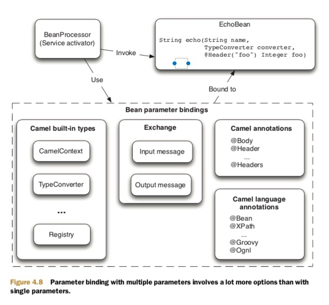

Camel提供了调用bean的方式
例如我们目前有这样一个Bean
public class HelloBean {
public String hello(String name) {
return "Hello " + name;
}
}
调用bean采用java的方式
public class InvokeWithProcessorRoute extends RouteBuilder {
public void configure() throws Exception {
from("direct:hello")
.process(new Processor() {
public void process(Exchange exchange) throws Exception {
String name = exchange.getIn().getBody(String.class);
HelloBean hello = new HelloBean();
String answer = hello.hello(name);
exchange.getOut().setBody(answer);
}
});
}
我们通过java方式进行调用bean的方法只能通过Processor
使用Camel的Bean调用
public void configure() throws Exception {
from("direct:hello").beanRef("helloBean", "hello");
}
// 优化，因为helloBean只有hello方法因此可以省略
public void configure() throws Exception {
from("direct:hello").beanRef("helloBean");
}
Camel支持的Bean存储
Camel调用Bean的方式
- 寻找Bean
- 选择方法进行调用
- 填充方法参数
- 调用方法
- 处理异常
- 设置返回信息
Camel是如何选择方法进行调用的
demo 假如我们有一个bean
public class EchoBean {
public String echo(String echo) {
return echo + " " + eco;
}
public String bar() {
return "bar";
}
}
两个方法，我们可以根据第九步选择只有一个参数的method，调用echo方法
如果我们把bar改成也有一个参数，
public class EchoBean {
public String echo(String echo) {
return echo + " " + eco;
}
public String bar(String test) {
return "bar" + test;
}
}
这样就有两个方法都有一个参数，那么camel无法进行判断，会抛出异常AmbigiousMethodCallException
我们有两种方式解决这个问题
- 通过
@Handler方式进行注解camel调用那个方法 - 通过参数的类型进行区分
public class EchoBean {
public String echo(String echo) {
return echo + " " + echo;
}
public Integer double(Integer num) {
return num.intValue() * num.intValue();
}
}
这样当你的消息为String时会调用echo方法，当你的参数为数值类型的时候会调用第二个方法
方法选择可能会遇到的问题
- Specified method not found， 如果找不到指定的方法名称，那么会抛出
MethodNotFoundException - Ambiguous method ,当没有指定方法名称的时候，Camel会按照上面的方法进行method的选择依然没有选择出来，同时如果制定了方法名称，但是方法的参数不同也会出现这个异常
- Type conversion failure，在Camel调用对应的方法的时候如果无法将message的body转换为对应的参数会抛出
NoTypeConversionAvailableException
方法参数绑定
回想上面的第九步，是选择一个参数只有一个的方法，这是为了将message的body进行转换为参数，但是如果有多个参数怎么办？

上面的这张图大概指出了参数是如何进行绑定的。
- Camel built-in types ， camel提供了一些参数类型
- Exchange 通过exchange的body或者header进行板顶
- Camel annotations 通过注解进行绑定
- Camel language annotations 通过一些特殊的语言进行绑定，比如如果message是xml那么通过xpath解析进行绑定
建议: 当使用多个参数的时候，第一个参数使用message-body 第二个参数使用绑定器或者anntations
Camel提供的固定的参数

例子：
public string echo(String echo, Registry registry) {
OtherBean other = registry.lookup("other", OtherBean.class);
...
}
public string echo(String echo, CamelContext context, Registry registry) {
...
}
使用annotation
例子
public String orderStatus(@Header("customerId") Integer customerId,
@Body Integer orderId)
public String orderStatus(@Body Integer orderId, @Headers Map headers){
Integer customerId = (Integer) headers.get("customerId");
String customerType = (String) headers.get("customerType");
...
}
使用特殊的注解
Camel提供了一些特殊的语言注解
例子
<order customerId="123">
<status>in progress</status>
</order>
那么我们可以使用@XPath注解进行参数绑定
public void updateStatus(@XPath("/order/@customerId") Integer customerId,@XPath("/order/status/text()") String status) {
...
}